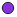

<!doctype html>
<html lang="en">
    <head>
        <meta charset="utf-8">
        <meta http-equiv="X-UA-Compatible" content="IE=edge">
        <meta name="viewport" content="initial-scale=1,user-scalable=no,maximum-scale=1,width=device-width">
        <meta name="mobile-web-app-capable" content="yes">
        <meta name="apple-mobile-web-app-capable" content="yes">
        <link rel="stylesheet" href="css/leaflet.css">
        <link rel="stylesheet" href="css/qgis2web.css"><link rel="stylesheet" href="css/fontawesome-all.min.css">
        <style>
        #map {
            width: 1157px;
            height: 862px;
        }
        </style>
        <title></title>
    </head>
    <body>
        <div id="map">
        </div>
        <script src="js/qgis2web_expressions.js"></script>
        <script src="js/leaflet.js"></script>
        <script src="js/leaflet.rotatedMarker.js"></script>
        <script src="js/leaflet.pattern.js"></script>
        <script src="js/leaflet-hash.js"></script>
        <script src="js/Autolinker.min.js"></script>
        <script src="js/rbush.min.js"></script>
        <script src="js/labelgun.min.js"></script>
        <script src="js/labels.js"></script>
        <script src="data/endmap_0.js"></script>
        <script>
        var map = L.map('map', {
            zoomControl:true, maxZoom:28, minZoom:1
        }).fitBounds([[-0.06186790639825139,-0.03138840787510179],[0.006723843397904798,0.06073192342552127]]);
        var hash = new L.Hash(map);
        map.attributionControl.setPrefix('<a href="https://github.com/tomchadwin/qgis2web" target="_blank">qgis2web</a> &middot; <a href="https://leafletjs.com" title="A JS library for interactive maps">Leaflet</a> &middot; <a href="https://qgis.org">QGIS</a>');
        var autolinker = new Autolinker({truncate: {length: 30, location: 'smart'}});
        var bounds_group = new L.featureGroup([]);
        function setBounds() {
        }
        function pop_endmap_0(feature, layer) {
            var popupContent = '<table>\
                    <tr>\
                        <td colspan="2">' + (feature.properties['id'] !== null ? autolinker.link(feature.properties['id'].toLocaleString()) : '') + '</td>\
                    </tr>\
                    <tr>\
                        <th scope="row">Type</th>\
                        <td>' + (feature.properties['Type'] !== null ? autolinker.link(feature.properties['Type'].toLocaleString()) : '') + '</td>\
                    </tr>\
                    <tr>\
                        <td colspan="2">' + (feature.properties['x'] !== null ? autolinker.link(feature.properties['x'].toLocaleString()) : '') + '</td>\
                    </tr>\
                    <tr>\
                        <td colspan="2">' + (feature.properties['y'] !== null ? autolinker.link(feature.properties['y'].toLocaleString()) : '') + '</td>\
                    </tr>\
                </table>';
            layer.bindPopup(popupContent, {maxHeight: 400});
        }

        function style_endmap_0_0(feature) {
            switch(String(feature.properties['Type'])) {
                case 'EC':
                    return {
                pane: 'pane_endmap_0',
                radius: 6.0,
                opacity: 1,
                color: 'rgba(35,35,35,1.0)',
                dashArray: '',
                lineCap: 'butt',
                lineJoin: 'miter',
                weight: 1,
                fill: true,
                fillOpacity: 1,
                fillColor: 'rgba(135,50,220,1.0)',
                interactive: true,
            }
                    break;
                case 'portal':
                    return {
                pane: 'pane_endmap_0',
                radius: 6.0,
                opacity: 1,
                color: 'rgba(35,35,35,1.0)',
                dashArray: '',
                lineCap: 'butt',
                lineJoin: 'miter',
                weight: 1,
                fill: true,
                fillOpacity: 1,
                fillColor: 'rgba(250,239,13,1.0)',
                interactive: true,
            }
                    break;
                default:
                    return {
                pane: 'pane_endmap_0',
                radius: 6.0,
                opacity: 1,
                color: 'rgba(35,35,35,1.0)',
                dashArray: '',
                lineCap: 'butt',
                lineJoin: 'miter',
                weight: 1,
                fill: true,
                fillOpacity: 1,
                fillColor: 'rgba(232,48,23,1.0)',
                interactive: true,
            }
                    break;
            }
        }
        map.createPane('pane_endmap_0');
        map.getPane('pane_endmap_0').style.zIndex = 400;
        map.getPane('pane_endmap_0').style['mix-blend-mode'] = 'normal';
        var layer_endmap_0 = new L.geoJson(json_endmap_0, {
            attribution: '',
            interactive: true,
            dataVar: 'json_endmap_0',
            layerName: 'layer_endmap_0',
            pane: 'pane_endmap_0',
            onEachFeature: pop_endmap_0,
            pointToLayer: function (feature, latlng) {
                var context = {
                    feature: feature,
                    variables: {}
                };
                return L.circleMarker(latlng, style_endmap_0_0(feature));
            },
        });
        bounds_group.addLayer(layer_endmap_0);
        map.addLayer(layer_endmap_0);
        var baseMaps = {};
        L.control.layers(baseMaps,{'endmap<br /><table><tr><td style="text-align: center;"></td><td>EC</td></tr><tr><td style="text-align: center;"></td><td>portal</td></tr><tr><td style="text-align: center;"></td><td></td></tr></table>': layer_endmap_0,}).addTo(map);
        setBounds();
        </script>
    </body>
</html>
